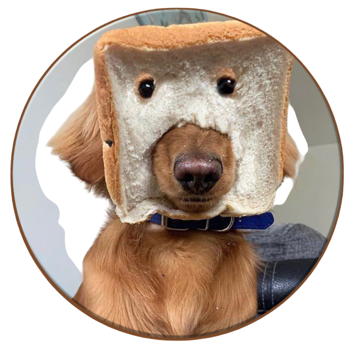

Swap
Captain Jack
Who is Captain Jack?
Ahoy, mateys! Meet Captain Jack ($JACK), the fearless fawn French Bulldog sailing the Solana seas! This 8-year-old champ isn’t just a looker—he’s a warrior, emotional support dog for a special ops veteran, and now a crypto hero. With scammers like Hayden lurking, Captain Jack is on a mission to bring trust, fun, and fairness to the blockchain. Whether you’re a crypto pro or a newbie, join Captain Jack’s crew and set sail for a brighter crypto future—one paw at a time! 🐾⚓️
🶠Creation Date: 03/03/2025
🶠CA: H6r9Y....pump
🶠Chain: Solana